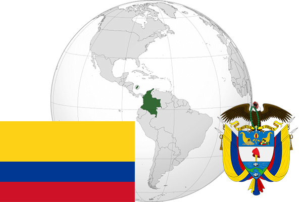

To`liq nomi: Kalumbiya Respublikasi
Region: Janubiy Amerikaning shimoliy qismi
Qonunchilik shakli: Respublika
Asos solingan: 20-iyul 1810 –yil (Ispaniyadan)
Poytaxt: Bogota
Maydoni: 1 141 748 km² (dunyoda 25-o`rinda )
Chegaradosh davlatlari: Panama, Venesuella, Braziliya, Peru, Ekvador
Aholisi: 48 400 388 (dunyoda 28 -o`rinda, 2015 -yil roʻyxat)
Aholi zichligi: 40,74/km²
Aholining o`rtacha yoshi: 72,3 yil ( 76,2 ayollar, 68,4 erkaklar)
Rasmiy tili: Ispan tili
Dini: Katolik
Pul birligi: Kolumbiya pesosi
Telefon prefiksi: +57
Internet domen: .co
Xalqaro tashkilotlarga a`zoligi: BMT (1945 –yildan)
Dengiz va okeanlarga chiqishi: Tinch va Atlantika okeanlari, Karib dengizi
YIM: Butun: $ 682,977 mlrd, Jon boshiga: $ 14 164 (2016 - yil roʻyxati)
Yirik shaharlari: Bogota, Medelin, Kali, Barrankilya, Kartaxena